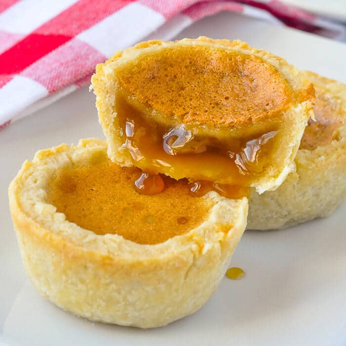

Butter Tart

Description
Delicious tarts made from butter and classic Canadian maple syrup.
Ingredients
- 1 1/2 cups packed brown sugar
- 2 eggs
- 1/2 cup butter
- 2 cups raisins
- 2 tbsp heavy cream
- 1 cup chopped walnuts
- 30 unbaked tart shells
Steps
- Preheat oven to 325 degrees F (170 degrees C).
- Cream the butter, sugar and eggs well. Add remaining ingredients and mix thoroughly.
- Pour batter into tart shells, no more than half full. Bake for 20 - 25 minutes. Watch carefully!!--they'll burn quickly. Filling will keep in the refrigerator for 2 weeks or so. Liquid coffee creamer can be used for cream. Use any good pie pastry for shells.